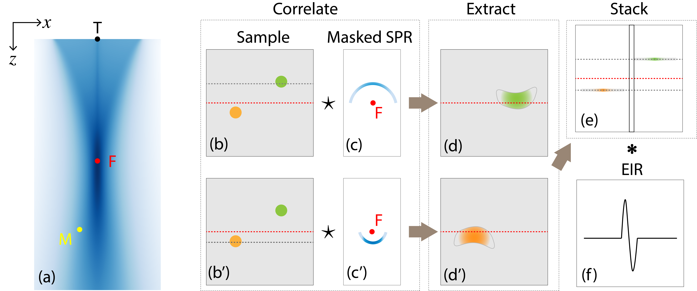
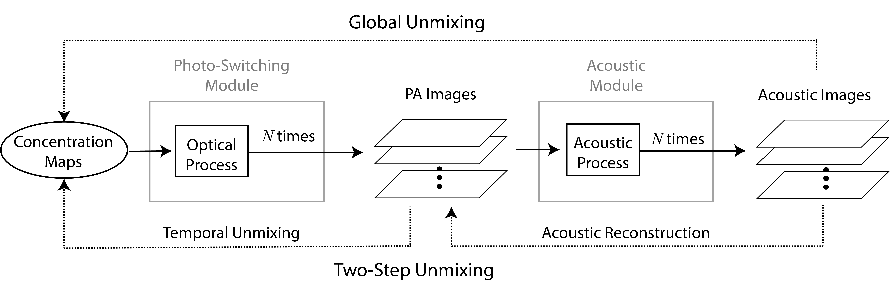

Forward Models: from Concentration Maps to Acoustic Signals¶
Photo-Switching Model¶
We carry out our modeling on a 2D sample during one OFF-switching cycle. We define the sample to be imaged as a function of spatial locations \(\mathbf{r}=(x, z)\in\mathbb{R}^2\) with a compact support \(\Omega\subset\mathbb{R}^2\). The forward model of photo-switching has been previously derived in section Modeling of Photo-Switching and Unmixing Method, and we briefly recall it here
where \(c_p(\mathbf{r})\) is the spatial distribution map of the \(p\)th species and the unknown quantity that we are interested in. The non-switching background is included in Eq. (55) as the \(P\)th reporter with \(k_P=0\) and \(\overline{\varepsilon}_P=0\).
Optical Model¶
We precompute the fluence map \(\Phi^0(\mathbf{r})\) without the contribution of the reporters and assume that \(\Phi(\mathbf{r}) \approx \Phi^0(\mathbf{r})\), similar to the case for PAT. Illumination is wide-field and can be assumed homogeneous when it reaches the sample surface. We model it with a function \(S(\mathbf{r})\) that describes a line segment with center \(\mathbf{r}_c = (x_c, 0)\), of length \(W>0\) and uniform intensity \(I_0>0\)
We set the absorption coefficient map \(\mu_a(\mathbf{r})\) and scattering coefficient map \(\mu_s(\mathbf{r})\) the same as the counterparts of the nonswitching background because we assume the contribution from reporters to be negligible. The reduced scattering coefficient \(\mu_s'(\mathbf{r})\) is defined as
where the anisotropy factor \(g\in(0, 1)\) is set to a typical value of \(0.9\). Following a similar approach to section Computation of Light Fluence in the previous part, we solve the pair of equations Eq. (47) and Eq. (48) combined with the illumination in Eq. (56), to obtain a map of the fluence distribution within the sample which we use to construct the forward model Eq. (55) for photo-switching PAM.
Photoacoustic Effect¶
The deposited optical energy \(H\) absorbed by the tissue leads to a local rise in temperature. It causes a thermo-elastic expansion of the tissue and produces acoustic waves that propagate through the sample. The detector on the sample surface records acoustic waves as measurements.
Because acoustic propagation and detection is independent for each pulse and its mathematical model takes the same form, we there from omit the notation \(t\) in the modeling of a single acoustic process for simplicity. The generated initial pressure (acoustic) field \(b(\mathbf{r})\) is proportional to the optical energy such that
where \(\iota(\mathbf{r})\) is the unitless Grueneisen coefficient. It indicates the efficiency of conversion between heat and pressure, and we assume it to be constant and set its value to 1 for simplicity [169, 170].
Acoustic Model¶


Fig. 30 (a) Spatial response of the transducer. Blue area represents the sensitivity field of the transducer. Dots represent the center of the transducer (T), the focal spot (F) and a point PA source (M). (b)-(f) Illustration of the generation of acoustic signals. SPR: spatial response of the transducer. EIR: electrical impulse response of the transducer. (b) and (b’): Sample. Background is in gray, green and orange discs represent two photoswitching reporters. Dashed horizontal red line represents location of the focal plane. Dashed gray lines in (b) and (b’) indicate the horizontal line of pixels of interest, one above (b) and one below (b’) the focal plane. (c) and (c’): Masked SPR, i.e. map of the weighted curves that corresponds to the depth of interest in (b) and (b’), respectively. (d) and (d’): Outcome of the convolution between the sample and the masked SPR (c) and (c’). Focal plane (red dash line) indicates where to extract the line of pixels. (e) Outcome of the spatial integration step by stacking the extracted lines at the corresponding locations indicated in (b) and (b’). The narrow vertical box indicates a line of pixels on which we filter with the EIR of the transducer (f).¶
During one acoustic process, ultrasonic waves originating from sources within the sample propagate through the sample and are detected by the transducer array on the sample surface. We assume a constant speed of sound \(c_0\) and an acoustically homogeneous and non-attenuating medium. We denote by \(\tau\) the acoustic propagation time (microsecond scale, propagation of sound over a few millimeters) to distinguish it from the switching time \(t\) (millisecond scale, repetition rate of the laser).
Following the principles of SAFT, we assume that signal from the focal point arrives at the same time on all the area of the transducer element, owing to its parabolic geometry, Therefore, we use the focal spot as a reference and propagate back to it. We denote the transducer position by \(\mathbf{r}_{\text{T}}=(x_{\text{T}}, 0)\), the focal length by a constant \(f>0\), and location of the focal spot by \(\mathbf{r}_{\text{F}}=(x_{\text{T}}, z_{\text{F}})\). The detected signal \(q(x_{\text{T}}, \tau)\) on the transducer at time \(\tau\), comes from the contributions of all the point sources lying on the (upper) semicircle \(C_1^{(x_{\text{T}}, \tau)} = \left\{ \mathbf{r} : |\mathbf{r} - \mathbf{r}_{\text{F}}| = f - c_0\tau, z<z_{\text{F}} \right\}\) centered at \(\mathbf{r}_{\text{F}}\) with radius \((f-c_0\tau)\) when \(c_0\tau < f\), and on another (lower) semicircle \(C_2^{(x_{\text{T}}, \tau)} = \left\{ \mathbf{r} : |\mathbf{r} - \mathbf{r}_{\text{F}}| = c_0\tau - f, z>z_{\text{F}} \right\}\) when \(c_0\tau > f\). At the focal spot \(\mathbf{r}_\text{F}\), i.e., when \(c_0\tau=f\), \(q\) is defined directly as \(b(\mathbf{r}_\text{F})\). Further, we take into account the influence of the sensitivity of the transducer, described by its (shifted) spatial response function \(h(\mathbf{r} - \mathbf{r}_{\text{T}})\) at the location \(\mathbf{r}\) of the point source (see Fig. 30 (a)). Hence, we integrate the weighted amplitude \(b(\mathbf{r})h(\mathbf{r} - \mathbf{r}_{\text{T}})\) on \(C_1^{(x_{\text{T}}, \tau)}\) when \(c_0\tau < f\) as
and on \(C_2^{(x_{\text{T}}, \tau)}\) when \(c_0\tau > f\) as
where \(\text{d}s\) is the 1D arc-length element. We denote \(r_\tau=f-c_0\tau\) for the sake of simplicity.
By representing the 1D line integral as a constrained 2D integral via a Dirac delta function, we formulate Eq. (59) equivalently as
where \(2r_\tau\) represents the Jacobian correction to account for the change of variables in the Dirac delta function. Similarly, for Eq. (60), we obtain
Next, we take into account the electrical impulse response \(v(\tau)\) of the transducer and model its effect as the temporal convolution of \(q(x_{\text{T}}, \tau)\) with \(v(\tau)\)
where \(p(x_{\text{T}}, \tau)\) is the noise-free acoustic signal detected on the transducer.
Full Forward¶
Putting every piece of the puzzle together, we have the full forward process of photo-switching PAM as shown in Fig. 31.


Fig. 31 Forward pipeline and inversion approaches. Solid and dashed arrows represent forward and inversion processes, respectively.¶
This pipeline takes concentration maps as input, enters them in the multiplexing module where the optical process is applied \(N\) times for \(N\) photo-switching pulses to obtain a stack of \(N\) PA images. These images are fed to the acoustic module where an acoustic detection process is applied to each of them. The final output is a stack of acoustic images (measurements). The goal of unmixing is to recover unknown concentration maps.
There are two ways to accomplish this (see Fig. 31). A commonly adopted approach is two-step unmixing. One first reconstructs the PA images by solving an inverse problem involving the acoustic process; then, one apply an unmixing algorithm on them. An alternative approach is to solve a global inverse problem that recovers concentration maps directly from acoustic measurements. These two approaches will be detailed in Inverse Problems.
Numerical Implementation¶
We discretize the 2D object domain \(\Omega\) into a collection of points \(\Delta\boldsymbol{i} = (\Delta_1 i_1, \Delta_2 i_2)\), where \(\boldsymbol{i} = (i_1, i_2) \in \Omega_{\text{2D}}\subset \mathbb{Z}^2\) is the index of sampled points, \(i_1 = 0, \ldots, L_\text{x} - 1\), and \(i_2=0, \ldots, L_\text{z} - 1\). The diagonal matrix \(\Delta = \text{diag}\left\{\Delta_1, \Delta_2\right\}\) defines the stepsize \(\Delta_1\) and \(\Delta_2\) for the lateral and axial direction, respectively. Switching time \(t\) is sampled at \(N\) pulses such that \(t_n = \Delta_{\text{t}} n\), \(n=0, \ldots, N-1\), with \(\Delta_{\text{t}}\) the temporal stepsize which is determined by the laser repetition rate during switching.
Discrete Photo-Switching Model¶
The discretization of Eq. (55) follows the same procedure as in Discrete Forward Model. We briefly recall the equation here for completeness:
with the deposited energy vector \(\mathbf{H} \in \mathbb{R}^{NL}\), concentration maps \(\mathbf{c} \in \mathbb{R}^{PL}\), and the pooled system matrix \(\mathbf{S} \in \mathbb{R}^{NL \times PL}\).
We compute the fluence map by applying the finite element method to the diffusion equation Eq. (47) with the boundary condition Eq. (48) and the light source defined in Eq. (56) and by following the same methodology described in Numerical Implementation of the Diffusion Equation.
Discrete Acoustic Model¶
Implementation of the acoustic model lies in the discretization of Eq. (61) and Eq. (62), where \(q(x_{\text{T}}, \tau)\) depends on both space and time. Here, we introduce a convenient variable \(y = c_0\tau\) and express \(q(x_{\text{T}}, \tau)\) equivalently in pure spatial coordinates as \(q(x_{\text{T}}, y)\) via a change of variables. We discretize the measurement domain into a grid of pixels \(\Gamma\boldsymbol{m}\), where \(\boldsymbol{m}=(m_1, m_2) \in \Theta_{\text{2D}}\subset\mathbb{Z}_2\) is the pixel index, \(m_1=0, \ldots, M_1 - 1\), and \(m_2=0, \ldots, M_2 - 1\). The set of indices \(\Theta_{\text{2D}}\) has \(M = M_1M_2\) elements. The diagonal matrix \(\Gamma = \text{diag}(\gamma_1, \gamma_2)\) contains the sampling stepsize \(\gamma_1\) and \(\gamma_2\) for the lateral and axial direction, respectively.
We define the forward model described in Eq. (61) as a linear operator \(\mathcal{L}:L_2(\mathbb{R}^2)\to L_2(\mathbb{R}^2)\) and write Eq. (61) equivalently as
Similarly, the discretized measurement function \(q:\Theta_{\text{2D}}\to\mathbb{R}\) can be written as
We represent the compactly supported function \(b(\mathbf{r})\) (equivalently \(H(\mathbf{r})\), c.f Eq. (58)) via a series of shifted basis functions \(\varphi\)
Here, we choose the basis function \(\varphi(\mathbf{r})\) to be the 2D rectangular function \(\text{rect}(\mathbf{r})\) to represent regular pixel grid, where
Thanks to the linearity of \(\mathcal{L}\), we obtain
where the quantity \(\mathcal{L}\{\varphi(\cdot / \Delta -\boldsymbol{k})\}(\Gamma\boldsymbol{m})\) has the expression
with \(I_{\text{x}} = [(k_1 - 1/2)\Delta_1, (k_1 + 1/2)\Delta_1]\), and \(I_{\text{z}} = [(k_2 - 1/2)\Delta_2, (k_2 + 1/2)\Delta_2]\).
To compute a discrete version of this integral, we express the function \(h(\mathbf{r})\) on the same rectangular basis with the same grid and support as \(b(\mathbf{r})\):
We also assume that the discretization grids \(\Omega_{\text{2D}}\) and \(\Theta_{\text{2D}}\) match and that \(\boldsymbol{r}_{\text{T}} = (x_\text{T}, z_\text{F}) = \Delta \boldsymbol{k}_{\text{T}}\) with \(\boldsymbol{k}_{\text{T}} \in \mathbb{Z}^2\) the indices of the transducer focal position. Then,
In Eq. (70), \(h\) is constant in the support \((I_\text{x} \times I_\text{z})\), such that:
The integral in Eq. (73) reduces to computing the arc length of the semicircle intersecting with the 2D box defined by \((I_{\text{x}}\times I_{\text{z}})\), which we denote by \(s_{\boldsymbol{m}}[\boldsymbol{k}]\). Therefore, Eq. (69) becomes
The precise computation of \(s_{\boldsymbol{m}}[\boldsymbol{k}]\) for all spatial locations is expensive, especially for large-scale reconstructions. For computational speed, we use a unit length of 1 for all pixels that intersect with the semicircle. Eq. (74) simplifies to
where we denote by \(\Lambda_+^{\boldsymbol{m}}\) the discrete upper semicircle. It is the set of pixel indices \(\boldsymbol{k}\) whose corresponding pixels intersect with the continuous upper semicircle \(C_+^{\mathbf{r}_{\text{T}, \boldsymbol{m}}}\)
where \(x_{\text{T}, m_1}\) is the location of the transducer on the measurement grid.
Similarly, in the case of the lower semicircle, we have
where \(\Lambda_-^{\boldsymbol{m}}\) is the discrete lower semicircle whose corresponding pixels intersect with the continuous lower semicircle \(C_-^{\mathbf{r}_{\text{T}, \boldsymbol{m}}}\)
In our implementation, \(\Lambda_+^{\boldsymbol{m}}\) and \(\Lambda_-^{\boldsymbol{m}}\)
are generated via a function
skimage.draw.circle_perimeter
from the imaging processing library scikit-image [171].
Eq. (75) (and similarly, Eq. (77)) can be implemented based on the following steps:
for each measurement location \(\boldsymbol{m}\),
Shift \(\eta\) to grid location of the transducer, then, element-wise multiply \(\beta\) with it;
Generate the semicircle mask \(\Lambda_+^{\boldsymbol{m}}\) and apply it to the outcome of Step 1);
Sum up all masked pixels \(\boldsymbol{k}\) to obtain \(q[\boldsymbol{m}]\).
Since the radius of the semicircle is the same for a given depth, we can generate a row of the image \(q\) at once. To avoid explicitly constructing the forward matrix by computing Eq. (75) for each pixel \(\boldsymbol{m}\), we interpret Eq. (75) equivalently as follows: the pixel value \(q[\boldsymbol{m}]\) is the result of the correlation between a 2D image \(\beta\) and a 2D image \(\eta\) multiplied by a binary mask, then evaluated at location \(\boldsymbol{k}_{\text{T}}\). We thus implement Eq. (75) (similarly Eq. (77)) based on the following steps:
Generate the semicircle mask at current depth \(k_{2}\);
Element-wise multiply it with the SPR image (see Fig. 30 (c) and (c’));
Correlate the PA image \(\beta\) with the masked SPR image;
Extract the horizontal slice at focal plane \(k_{\text{T}, 2}\) from the outcome of Step 3);
Perform Step 1) to 4) for all depths and stack the horizontal slices according to their respective location to produce the 2D image \(q\). The temporal convolution step is applied to each column of the 2D image \(q\) via standard convolution in 1D. We provide an illustration of the acoustic signal-generation process in Fig. 30.
We write the forward model for a single acoustic process at switching time point \(t_n\) as the linear system
where \(\mathbf{b}^n\) and \(\mathbf{p}^n \in\mathbb{R}^{L}\) are the vector representation of the PA image \(\beta\) and the acoustic image \(p\) at \(t_n\), respectively. We construct the acoustic forward operator \(\mathbf{W}\in\mathbb{R}^{L \times L}\) as a matrix-free linear operator following the interpretation in Fig. 30.
Finally, we build the acoustic forward operator \(\mathbf{W}_{\text{tot}}\) for \(N\) switching pulses during an OFF-switching cycle and obtain
In Eq. (80), \(\mathbf{b}\in\mathbb{R}^{NL}\) is the vector of the initial pressure of all \(N\) pulses, \(\mathbf{W}_{\text{tot}}\in\mathbb{R}^{NL\times NL}\) is the system matrix, \(\mathbf{p}\in\mathbb{R}^{NL}\) is the vector of the acoustic measurement of all \(N\) pulses, and the vector \(\mathbf{n}\in\mathbb{R}^{NL}\) represents measurement noise. Note that both \(\mathbf{W}\) and \(\mathbf{W}_{\text{tot}}\) are matrix-free linear operators.
Complete Forward Pipeline¶
We denote the forward operator of the complete pipeline as \(\mathbf{A}\in\mathbb{R}^{NL\times PL}\). It is a composition of the photo-switching forward operator \(\mathbf{S}\) and the complete acoustic forward matrix \(\mathbf{W}_{\text{tot}}\):
The forward pipeline takes the vector \(\mathbf{c}\) of concentration maps as input, applies the photo-switching operator \(\mathbf{S}\) in which the optical process is applied \(N\) times for \(N\) photo-switching pulses to obtain a stack of \(N\) PA images \(\mathbf{H}\) (or equivalently \(\mathbf{b}\), cf. Eq. (58)). They are then fed to the acoustic module where the acoustic detection process is applied to each PA image. The final measurement is a stack of acoustic signals \(\mathbf{p}\).